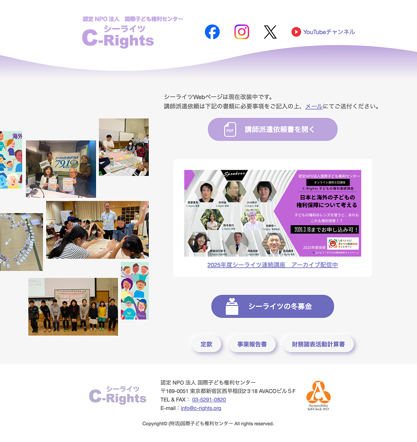

2025年 7・12月 国際こども権利センター
改装期間中の情報導線を整理した1ページサイト
担当：情報設計 / デザイン / コーディング

NPO法人のWebサイトリニューアル期間中に公開する仮サイトを制作。
改装期間中でも問い合わせや活動情報の確認ができるよう、
必要な情報を整理した1ページ構成のサイトにした。
公開後、冬の寄付募集に合わせて「冬募金ページ」を追加制作。
既存サイトのサーバー移転とリニューアルの
タイミングにより、一定期間サイトを閉じる必要があった。
仮サイトであることを踏まえ、
ページ数を増やさない1ページ構成を採用。
必要な情報に内容を整理し、
継続的な情報発信のためSNSリンクをヘッダーに配置。
団体の活動内容（子どもの権利・福祉）を踏まえ、
誠実さと柔らかさを感じられるデザインを意識した。
団体のイメージカラーである紫を基調とし、装飾を増やしすぎず
余白を活かしたレイアウトにすることで、情報の読みやすさを重視している。
仮サイト公開後、冬の寄付募集に合わせて
「冬募金ページ」を追加制作。
当初提供された画像や文章の構成では、
情報のまとまりや視線の流れに違和感があったため、
レイアウトや文章の配置について提案を行った。
クライアントと相談しながら内容を整理し、
寄付の趣旨や必要性が伝わりやすい構成へ調整した。